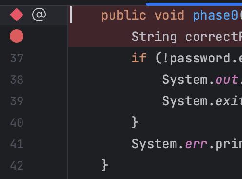
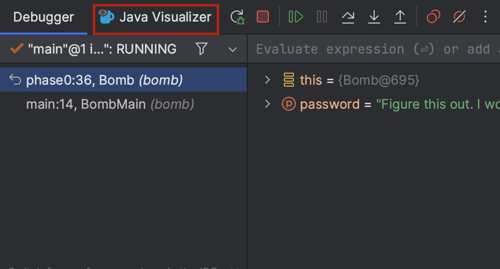
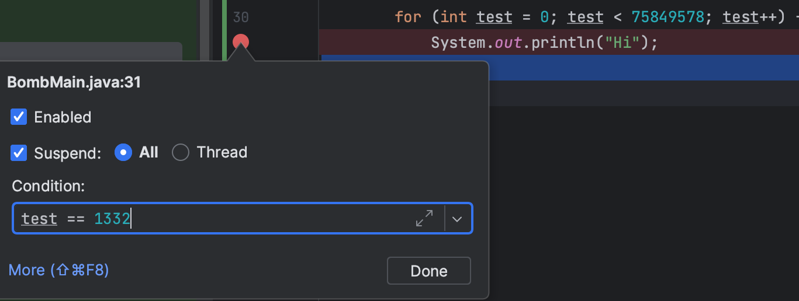

Lab 02: Debugging (Part 1)¶
常见问题解答（FAQ）¶
每项作业顶部都会有一个常见问题解答的链接。你也可以在网址末尾添加 “/faq” 来访问。实验 2 的常见问题解答可在此处找到。
简介¶
调试程序时，你首先得知道哪里出了问题。在本次实验中，你将通过使用调试器查看程序状态来积累一些经验。当遇到程序错误时，会伴随出现 “堆栈跟踪” ，它会详细列出最初导致错误的方法调用。在本次实验中我们不会讲解如何查看堆栈跟踪，不过在后续实验中会进一步讨论。
待办事项：添加展示大语言模型（LLM）失效模式（如确认偏差）的 LLM 练习。
准备工作¶
按照作业工作流程 获取作业并在 IntelliJ 中打开。
目标与成果¶
在本次实验中，你将通过排除（程序中的） “定时炸弹” 来提升代码调试能力。我们会指导你完成这个过程，目的是让你获得真实的调试体验。
在本次实验结束时，你将能够：
-
使用调试器和可视化工具检查程序状态。
-
解读测试失败信息。
-
更好地掌握代码调试方法。
Tip
对于本次实验以及整门课程，我们强烈建议你先自行尝试，包括在不确定某些内容时进行查阅。在本次实验中，可能会遇到诸如某个错误的含义或抛出的异常等问题，去谷歌搜索一下！
Bomb¶
BombMain 类会调用 Bomb 类的各个 phase 方法。在本次实验中，我们将通过 BombTest.java 中的测试来运行实验。如果你运行 BombTest （在测试文件夹中），你会注意到有一些错误，这是因为 BombMain 中 phase 方法当前的输入不是正确的密码！你的任务是使用 IntelliJ 调试器找出每个阶段的密码。
Danger
警告：代码经过编写，你无法仅通过阅读来找到密码。在本次实验中，禁止你编辑 Bomb 和 BombTest 代码，无论是添加打印语句还是进行其他修改都不行。这个练习的目的是让你熟练使用对今后有很大帮助的工具。请认真对待！ 如果你修改这些文件，自动评分器的测试将无法通过！
如前所述，你将从测试文件夹中的 BombTest.java 运行代码，并且可以利用这些测试来辅助调试。和其他作业一样，你最终会自己编写测试来帮助修复错误！你唯一需要修改的文件是 BombMain.java 。
BombTest.java 是你运行程序的地方。 Bomb.java 和 BombMain.java 不会有绿色运行按钮，因为它们不包含 static void main(String[] args) ，所以请务必通过 BombTest.java 来运行程序！
交互式调试¶
到目前为止，你可能已经通过使用打印语句来查看程序运行时某些变量的值，以此练习调试。如果将打印语句放在合适的位置，打印输出可能有助于让错误一目了然，或者缩小错误原因的范围。这种方法称为 打印调试 。虽然打印调试非常有用，但它也有一些缺点：
-
它要求你修改代码，之后还得清理。
-
决定并准确写出你想要打印的内容很繁琐。
-
打印输出的格式并不总是美观。
在本次实验中，我们将向你展示一种新技术—— 交互式调试 ，即使用交互式工具（也就是调试器）进行调试。我们将重点介绍 IntelliJ 的内置调试器。
调试器概述¶
断点¶
在启动 IntelliJ 调试器之前，你应该设置几个 断点 。断点标记了代码中的位置，在调试时你可以在这些位置暂停程序并检查其状态。断点有以下优点：
-
无需修改代码，也无需在调试后清理代码，因为在正常执行时断点会被忽略。
-
无需编写打印语句就能查看所有变量。
-
能让 IntelliJ 以结构化的方式显示所有内容。
继续操作，打开 Bomb.java 并设置一个断点。要设置断点，点击行号右侧的区域。

点击的位置应该会出现一个红色圆圈或菱形标记。如果没有出现任何标记，请确保你点击的是有代码的行旁边。当调试器运行到程序中的这个点时，它会在执行该行代码或方法之前暂停。再次点击断点即可将其移除。
运行调试器¶
现在，让我们设置几个断点——你可以在 Bomb.java 或 BombMain.java 中进行设置。设置好断点后，我们就可以开始调试会话了！点击你想要调试的类或测试旁边的绿色三角形（在测试文件中可能会有两个绿色三角形）。不要点击绿色三角形来运行程序，而是点击调试选项：

所选程序应该会一直运行，直到遇到第一个断点。调试器窗口也应该会出现在界面底部原本控制台所在的位置。

在（调试器窗口的）左侧，你将能够看到当前所有的方法调用；在右侧，你可以看到程序在这个时间点已实例化变量的值（这些值在编辑器中也会以灰色文本显示）。对于类的实例，你可以点击下拉箭头展开它们，查看其字段。
在调试器中，你有以下几个操作选项：
-
从显示的值中了解信息，找出问题所在并修复错误！点击
 停止调试会话。
停止调试会话。 -
点击
 恢复程序运行（直到遇到下一个断点或程序终止）。
恢复程序运行（直到遇到下一个断点或程序终止）。 -
点击让程序单步执行一行代码。
-
点击
 执行类似操作，但它会进入当前行调用的任何方法内部，而
执行类似操作，但它会进入当前行调用的任何方法内部，而 会直接跳过该方法继续执行。
会直接跳过该方法继续执行。 -
点击
 使程序继续运行，直到从当前方法返回。
使程序继续运行，直到从当前方法返回。 -
如果你不小心单步执行过了头，想重新开始调试会话，点击
 （至少目前没有很好的直接回退方法）。
（至少目前没有很好的直接回退方法）。
Bomb 介绍(第 0 阶段)¶
Tip
在本次实验中，如果你想对正在调试的方法 / 阶段有个总体了解，我们会提供方法详解。
Task
在 phase0 处设置一个断点，利用调试器找出 phase0 的密码，并在 bomb/BombMain.java 中相应地替换 phase0 的参数。你可以从 tests/bomb/BombTest.java 里的 testBombPhase0 启动程序。
一旦你找到了正确密码，运行代码（非调试模式）时应输出 你使用密码‘<password>’通过了阶段0！ ，而不是 阶段0爆炸了！
Phase0方法细分
phase0 方法首先会生成一个秘密字符串 correctPassword （你无需了解 shufflePassword 的工作原理 ）。然后，将从 BombMain 传入的 password 与 correctPassword 进行比较。此阶段的目标是使用调试器找出 correctPassword 的值，并传入与之匹配的 password 。
可视化工具（第一阶段）¶
在本次实验的这个部分，我们将使用 IntList 。如果你需要快速复习，可以参考本周相关的课程幻灯片。
在我们对 IntList 的实现中，有两个可能未提及的方法： print 和 of 。 of 方法让创建 IntList 更加便捷。下面简要演示其工作原理。看这段代码：
IntList lst = new IntList(1, new IntList(2, new IntList(3, null)));
仅仅为了创建一个包含 1、2、3 的列表，就要输入这么多内容（而且也很容易混淆）！ IntList.of 方法解决了这个问题。要创建一个包含 1、2、3 这些元素的 IntList ，你只需输入：
IntList lst = IntList.of(1, 2, 3);
另一个方法 print 会返回 IntList 的字符串表示形式。
IntList lst = IntList.of(1, 2, 3);
System.out.println(lst.print());
// 输出: 1 -> 2 -> 3
回到调试——虽然能够查看变量值很好，但有时我们的数据不太容易检查。例如，要查看长 IntList ，我们得点击很多下拉菜单。Java 可视化工具会显示程序中变量的盒图和指针图，这对 IntList 来说更适用。要使用可视化工具，运行调试器，直到在断点处停下，然后点击 “Java Visualizer” 标签页。下面用红色框出了该标签页。

阶段 1 的密码是一个 IntList ，而不是字符串 。你可能会发现 IntList.of 方法很有用。
Task
在 phase1 处设置一个断点，使用 Java 可视化工具找出阶段 1 的密码，并在 bomb/BombMain.java 中相应地替换 phase1 的参数。你可以从 tests/bomb/BombTest.java 中的 testBombPhase1 启动程序。
Phase1方法细分
phase1 方法会生成一个名为 correctIntListPassword 的秘密 IntList （与上一阶段类似，你无需了解 shufflePasswordIntList 的工作原理 ）。然后，将从 BombMain 传入的 password （以 IntList 形式 ）与 correctIntListPassword 进行相等性比较。此阶段的目标是使用调试器的 Java 可视化工具找出 correctIntListPassword 这个 IntList 的结构和值，并传入与之匹配的 password 。
条件断点(第二阶段)¶
设想一个循环 5000 次的程序，要是每次都单步执行来查找错误，效率可不高。相反，你会希望程序在特定的迭代（比如最后一次）时暂停。换句话说，你希望程序在满足某些条件时暂停。要实现这一点，在感兴趣的代码行处设置一个断点，然后右键单击断点图标，打开 “编辑断点” 菜单。在那里，你可以输入一个布尔条件，这样只有当条件为真时，程序才会在这个断点处暂停。大概是像这样：

你还可以在 Java 中为异常设置断点。如果程序崩溃，调试器可以在抛出异常的位置暂停，并显示程序状态。要做到这一点，在调试器窗口中点击，然后按下加号图标来创建一个 “Java 异常断点” 。在弹出的窗口中，输入程序抛出的异常名称。
Task
在 phase2 处设置一个断点，使用调试器找出 phase2 的密码，并在 bomb/BombMain.java 中相应地替换 phase2 的参数。记住，不要编辑 Bomb.java ！你可以从 tests/bomb/BombTest.java 中的 testBombPhase2 启动程序。
Tip
注意：此阶段的密码不像前几个阶段那样会明确给出。相反，你的任务是使用条件断点 “尝试找出” 密码。
Phase2方法细分
phase2 方法从 BombMain 接收 password 。
该方法会向一个名为 numbers 的 Set 集合中添加 100,000 个随机整数。然后使用增强型 for 循环遍历这些整数，同时递增变量 i 。在第 1338 次迭代时（因为 Java 是从 0 开始计数，所以在第 1338 次迭代时 i == 1337 ），会检查你的 password 是否与当前值相等。
此时，你应该能够运行 tests/bomb/BombTest.java 中的测试，并且所有测试都能通过，显示绿色对勾。
成功提交和评分¶
Warning
确保你没有编辑 Bomb.java 或 BombTest.java 。自动评分器会进行测试，检查你是否编辑过这些文件，一旦文件有改动（包括添加注释 ），你将无法通过。本地测试会阻止你编辑 Bomb.java ，但不会阻止编辑 BombTest.java （这一点仅在自动评分器中检测 ），所以不要动这些文件！
本次实验满分为 5 分。
- 找出
BombMain.java中所有阶段的密码，并在提交到 Gradescope 之前，确保本地所有测试都能通过。
提交¶
和实验 1 一样，先将实验 2 的代码添加到版本控制，再提交，然后推送到 GitHub 。接着，提交到 Gradescope 进行代码测试。如果你需要复习相关操作，可以查看实验 1 说明文档以及作业工作流程指南中的说明。
致谢¶
本次作业改编自亚当·布兰克（Adam Blank） 。